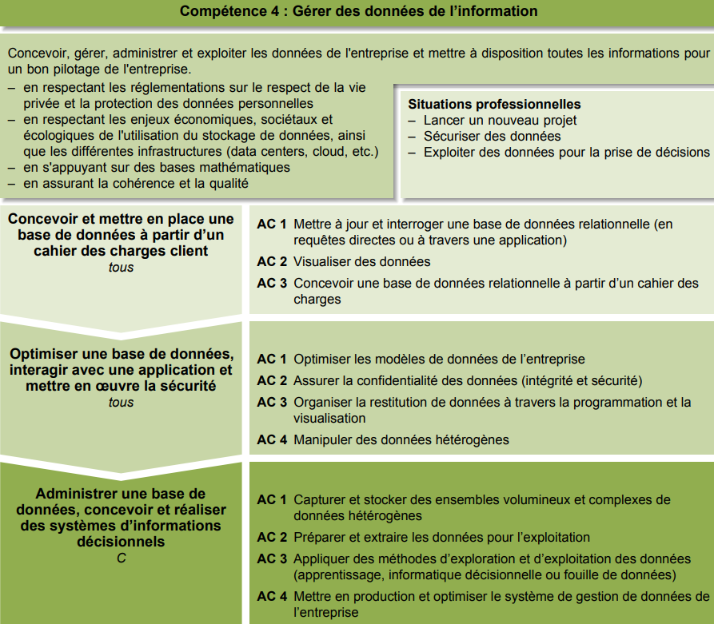

– Mettre à jour et interroger une base de données relationnelle (en requêtes directes ou à travers
une application)
– Visualiser des données
– Concevoir une base de données relationnelle à partir d’un cahier des
charges
Apprentissage critique de la Competence

Evaluation
| Ressource | R5 Introduction aux BD | R6 Maths discrètes | R9 Introduction économie |
| Coefficient | 48 | 18 | 6 |
SAE 4 Création BD
En partant d'un besoin exprimé par un client, Il faut étudier puis réaliser une base de données portant sur une partie du système d'information à développer.
Ressources
R5
Introduction aux BD
– Mettre à jour et interroger une base de données
relationnelle (en requêtes directes ou à travers une
application)
– Concevoir une base de données relationnelle à
partir d'un cahier des charges
Descriptif détaillé
Objectif L'objectif de cette ressource est l'initiation aux bases de données. Cette ressource permet une première sensibilisation sur l'importance d'une base de données dans le système d'information de l'entreprise et montre la complexité de la création d'une base répondant aux besoins et qui soit de bonne qualité. Savoir de référence étudiés: – Approche de la conception des bases de données : modèle conceptuel de données et traduction vers le modèle relationnel + contrainte simple + redondance – Algèbre relationnelle – Base du Structured Query Language (SQL) : langage de manipulation de données, langage de définition de données – Éléments sur les jeux de tests + jeux de données – Principes et utilisation d'un système de gestion de bases de données (SGBD) – Utilisation d'atelier de génie logiciel – Formulaire et état – Les différents savoirs de référence pourront être approfondis
R6
Maths. discrètes
- Formaliser et mettre en œuvre des outils
mathématiques pour l'informatique
-Mettre à jour et interroger une base de données
relationnelle (en requêtes directes ou à travers une
application)
Descriptif détaillé
Objectif L'objectif de cette ressource est de mettre en place les outils mathématiques nécessaires aux bases de l'informatique. Elle aide à formaliser et mettre en œuvre des outils mathématiques pour l'informatique. Elle accompagne la mise en place des bases de données en explicitant les structures fondamentales de ces dernières. Savoir de référence étudiés – Logique (prédicats, propositions…) – Théorie des ensembles – Algèbre de Boole – Arithmétique modulaire – Relations, applications
R9
Introduction à l’économie durable et numérique
- Mettre à jour et interroger une base de données
relationnelle (en requêtes directes ou à travers une
application)
- Visualiser des données
Descriptif détaillé
Objectif
L'objectif de cette ressource est de découvrir l'économie durable et responsable. L'essor des
données de l'information
dans la société actuelle amène des nouveaux défis économiques. L'étude de la donnée dans son
contexte permet une
meilleure visualisation des données de l'information manipulées au quotidien par
l'informaticien. Les fondements de
l'économie représentent un incontournable pour appréhender l'écosystème numérique.
Savoir de référence étudiés
– Fondements de l'économie (marchés et dysfonctionnements, acteurs économiques, croissance et
déséquilibres
économiques, politique économique, mondialisation)
– Écoconception des services numériques (économie circulaire / numérique responsable, enjeux du
développement
durable, régulation et impact du numérique)
– Enjeux économiques des données de l'information (acteurs et modèles de l'économie numérique,
marché de la
donnée)
– Les différents savoirs de référence pourront être approfondis